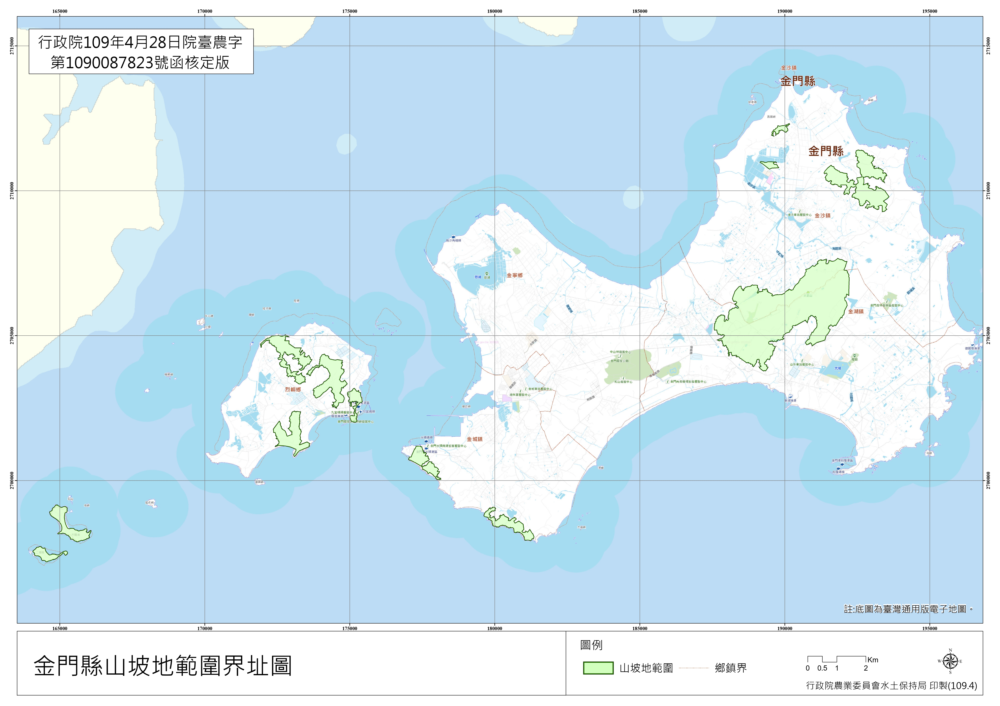
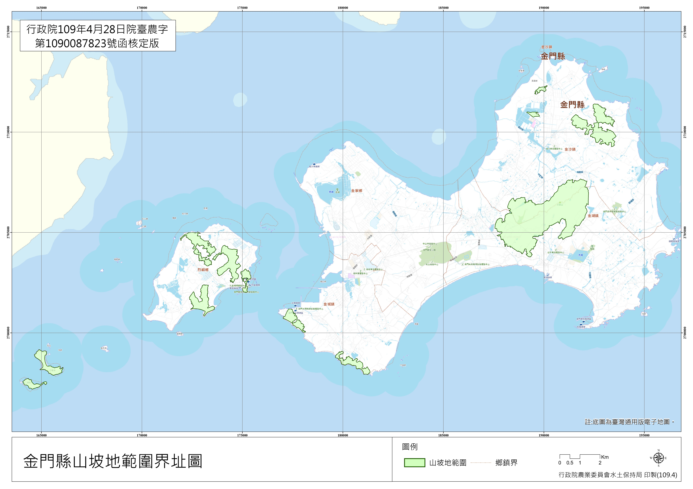
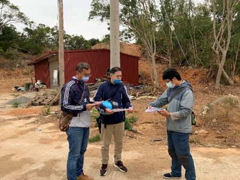
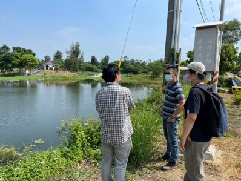
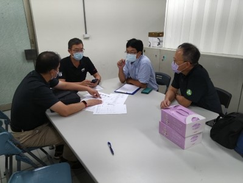
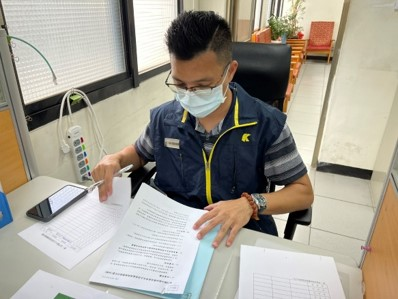

金門縣水土保持服務團由水土保持技師公會推薦具熱忱、專業的技師組成，分為檢查指導、農地輔導、計畫審查、諮詢服務及勘災建議等5組，並由行政院農業委員會水土保持局與金門縣政府共同指導。
規劃劃設山坡地
行政院開始金門縣山坡地劃設計劃
2019
山坡地範圍公告
行政院公告劃設金門縣地區山坡地界址圖
2020
水土保持服務團成立
金門縣水土保持服務團正式成立
2022
金門縣山坡地界址圖

金門縣水土保持服務團由水土保持技師公會推薦具熱忱、專業的技師組成，分為檢查指導、農地輔導、計畫審查、諮詢服務及勘災建議等5組，並由行政院農業委員會水土保持局與金門縣政府共同指導。
行政院開始金門縣山坡地劃設計劃
行政院公告劃設金門縣地區山坡地界址圖
金門縣水土保持服務團正式成立
金門縣山坡地界址圖

本水土保持服務團提供水土保持服務團專業技師服務如下：
違規改正之技術諮詢，坡地水土保持處理技術指導。 
輔導農地水土保持處理維護，協助繪製施工圖說。 
協助水土保持申報書審查事宜。 
水土保持相關法規及申請書件填寫等諮詢服務，固定每月一次駐點輪值，並配合開辦課程、公所需求走動式駐點。 
協助坡地災害現場勘查，指導臨時防災措施並提供整治工法之建議。
歡迎前來諮詢，必要時技師會親自前往坡地現場輔導，完全免費，歡迎有需要的民眾多加利用。電話：02-82581918
歡迎來電或來信聯絡!